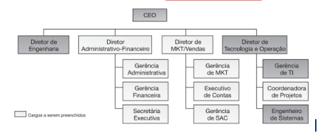

Disciplinas
GESTÃO DE INOVAÇÃO E DESENVOLVIMENTO DE PRODUTOS Concluído
Materiais
- Prof° Especialista: Dr. Arthur Caldeira Sanches.
- Iniciado em sábado, 7 dez 2024, 20:56
- Estado Finalizada
- Concluída em sábado, 7 dez 2024, 21:27
- Tempo empregado 30 minutos 17 segundos
- Avaliar 10,00 de um máximo de 10,00(100%)
Questionário ✅ ❌
Pergunta 1
Assinale a alternativa correta sobre o Plano de Negócios.
Escolha uma opção:
- a. É um documento usado para descrever um empreendimento e o modelo de negócio que sustenta a empresa.
- b. É um planejamento vinculado ao PCDA e Scrum.
- c. Utiliza, como uma de suas ferramentas, o Agile e o Brain Storm.
- d. É um documento utilizado para analisar as receitas e despesas da empresa, também chamado de DRE
- e. É uma metodologia similar ao Design Thinking.
Resolução:
- O Plano de Negócios é uma ferramenta essencial que descreve detalhadamente o empreendimento, incluindo seu modelo de negócios, estratégias, estrutura operacional, análise de mercado e projeções financeiras. Ele serve como um guia tanto para a criação de um novo negócio quanto para a expansão de empresas já existentes.
Pergunta 2
Assinale a alternativa que apresenta a essência da segmentação de mercado, segundo Etzel, Walker e Stanton (2001).
Escolha uma opção:
- a. Divisão de um mercado total de um produto ou serviço em diversos grupos menores, internamente homogêneos.
- b. Delimitação de quem pode atuar naquele mercado ou não.
- c. Divisão do quanto cada produto deve custar em comparação com os concorrentes.
- d. Delimitação de quem pode trabalhar naquele mercado ou não.
- e. Divisão de quem pode e quem não pode comprar os produtos ou serviços.
Resolução:
- A segmentação de mercado, segundo Etzel, Walker e Stanton (2001), consiste em dividir o mercado total de um produto ou serviço em segmentos menores que compartilhem características semelhantes, como comportamentos, necessidades ou preferências. Esses grupos internos são homogêneos, o que significa que os membros de cada segmento respondem de maneira semelhante às estratégias de marketing.
Pergunta 3
Assinale a alternativa que apresenta o conceito de inovação segundo autores como Wheelwright & Clark, 1992; Urban & Hauser, 1993; Ulrich & Eppinger, 2004; Rozenfeld et al., 2006:
Escolha uma opção:
- a. Processo de desenvolvimento de um novo produto composto, genericamente, de cinco estágios.
- b. Processo de desenvolvimento de um produto antigo, composto por sete estágios.
- c. Método gráfico de definição do fluxo de trabalho.
- d. Estratégia de captação de novos fornecedores para o processo produtivo.
- e. Método de encerramento de um produto que se encontra no final de seu ciclo de vida.
Resolução:
- Segundo autores como Wheelwright & Clark (1992), Urban & Hauser (1993), Ulrich & Eppinger (2004) e Rozenfeld et al. (2006), inovação está intimamente ligada ao processo de desenvolvimento de novos produtos, que geralmente é descrito como um ciclo estruturado de etapas. Essas etapas incluem a identificação de oportunidades, planejamento, concepção, desenvolvimento, teste e lançamento no mercado.
Pergunta 4
Sobre a conclusão do estudo de Grutzmann et al (2019) é correto afirmar que as práticas de inovação não são influenciadas pelo uso de tecnologias da internet.
Escolha uma opção: Verdadeiro ou Falso.
Resposta: Falso. ✅Resolução:
- O estudo de Grutzmann et al. (2019) conclui que as práticas de inovação são influenciadas pelo uso de tecnologias da internet. A internet desempenha um papel significativo na inovação, pois facilita o acesso a informações, a comunicação entre equipes, a colaboração em projetos, a automação de processos e a interação com clientes e fornecedores. Essas tecnologias promovem o surgimento de novas ideias e melhoram os processos de desenvolvimento e implementação de inovações.
Pergunta 5
Assinale a alternativa incorreta sobre a introdução da segmentação de mercado na literatura de marketing.
Escolha uma opção:
- a. A publicação ocorreu no Journal of Marketing.
- b. Ocorreu em 1956.
- c. O conceito surgiu para se igualar ao conceito do marketing de massa.
- d. Sua prática já era anterior ao artigo publicado em 1956.
- e. Ocorreu através de um artigo de Wendell Smith.
Resolução:
- O conceito de segmentação de mercado surgiu em oposição ao marketing de massa, não para se igualar a ele. A segmentação foi introduzida como uma abordagem mais focada e personalizada, que reconhece as diferenças entre os consumidores e busca atender às necessidades específicas de grupos distintos, ao invés de tratar o mercado como um todo homogêneo, como acontece no marketing de massa.
Pergunta 6
Assinale a alternativa que não apresenta um dos objetivos básicos (relacionado aos negócios) que o plano de negócios pode atender.
Escolha uma opção:
- a. Orientar o desenvolvimento das operações e estratégias.
- b. Omitir a credibilidade da ideia de negócios.
- c. Testar a viabilidade de um conceito de negócio.
- d. Desenvolver a equipe de gestão.
- e. Atrair recursos financeiros.
Resolução:
- O objetivo de um plano de negócios é justamente o oposto do que está descrito na alternativa b. Ele busca demonstrar a credibilidade e viabilidade da ideia de negócio, fornecendo informações detalhadas sobre o mercado, estratégias, projeções financeiras e operações.
Pergunta 7

Assinale a alternativa que descreve corretamente a imagem acima.
Escolha uma opção:
- a. Plano de Negócios.
- b. Fluxograma.
- c. Scrum.
- d. Organograma.
- e. Balanço Patrimonial.
Resolução:
- A imagem representa um organograma, que é uma ferramenta utilizada para ilustrar a estrutura hierárquica de uma organização. Ele mostra a relação entre os cargos, departamentos e responsáveis, indicando como as funções são distribuídas e as linhas de subordinação dentro da empresa.
Pergunta 8
Assinale a alternativa que apresenta aspectos-chave do plano de negócios.
Escolha uma opção:
- a. Quantos produtos você vende?
- b. Quanto dinheiro você possui?
- c. Qual é a sua profissão?
- d. Qual é o seu mercado alvo?
- e. Qual é a sua escolaridade?
Resolução:
- O mercado-alvo é um dos aspectos-chave de um plano de negócios, pois define o público específico que o empreendimento deseja alcançar. Identificar e entender o mercado-alvo é essencial para planejar estratégias de marketing, vendas e desenvolvimento de produtos ou serviços que atendam às necessidades e desejos desse grupo de consumidores.
Pergunta 9
Compõem o chamado Ciclo de Vida do Produto o Lançamento, Crescimento, Maturidade e Declínio.
Escolha uma opção: Verdadeiro ou Falso.
Resposta: Verdadeiro. ✅Resolução:
- O Ciclo de Vida do Produto é um conceito amplamente aceito no marketing e na gestão de produtos, que descreve as etapas pelas quais um produto passa desde seu desenvolvimento até sua retirada do mercado. As fases são:
- Lançamento: Introdução do produto no mercado. Envolve altos custos de marketing e produção para criar conscientização e atrair clientes iniciais.
- Crescimento: Aumento das vendas e aceitação do produto no mercado. É o estágio de expansão.
- Maturidade: O crescimento das vendas começa a estabilizar. A concorrência aumenta e estratégias de retenção de clientes são importantes.
- Declínio: As vendas diminuem devido à obsolescência, mudanças no mercado ou avanços tecnológicos.
Pergunta 10
Apresente a alternativa que não apresenta uma das possibilidades do plano de negócios.
Escolha uma opção:
- a. Entender e estabelecer diretrizes para o seu negócio.
- b. Identificar oportunidades e transformá-las em diferencial competitivo.
- c. Monitorar o dia a dia da empresa.
- d. Garantir o sucesso de um negócio.
- e. Conseguir financiamentos e recursos, junto aos bancos.
Resolução:
- Embora o plano de negócios seja uma ferramenta poderosa para planejamento, estruturação e análise de um empreendimento, ele não pode garantir o sucesso de um negócio. O sucesso depende de diversos fatores, como execução eficiente, adaptação às mudanças de mercado, gestão eficaz e outros elementos que vão além do planejamento inicial.